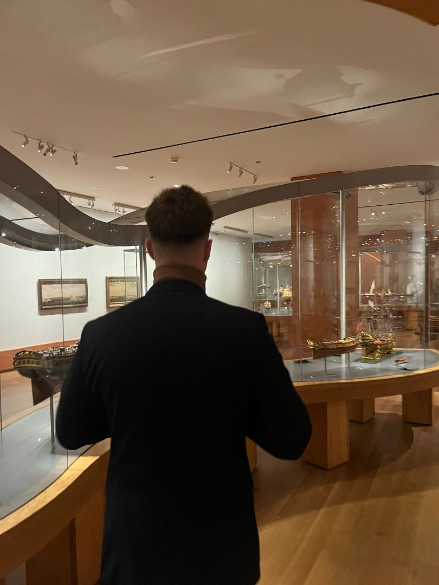

I’m Alex Biondi, a Digital Communications student at Humber Polytechnic building toward software engineering through technical courses, hands-on projects and product development.
My long-term goal is to use wearable technology to advance health care and life longevity by giving people access to, control over and a deeper understanding of their own health data. I’m interested in building systems that help people act earlier, support prevention and give providers better context before care decisions are made.
I’m also building Universlly.io, an AI-powered marketing budget optimization platform. Although it operates in marketing, the deeper work is helping me develop the same practical skills I want to bring into health-tech: data integration, AI decision support, user dashboards, automation, product design and trust-based systems.
I started in Kinesiology & Health Science at York University, where I studied human movement, physiology and how the body responds to stress, recovery and performance. That background shaped my interest in wearable health technology because it taught me to think about the body as a connected system with signals, patterns and feedback loops.
I transitioned to Digital Communications at Humber Polytechnic to build stronger skills in communication, user experience and product thinking. I want to use my communications background to make health technology more accessible by helping users understand complex information clearly. For health-tech to actually help people, data cannot just exist; it has to be explained in a way that feels trustworthy, usable and meaningful to patients.
Now, I’m building toward software engineering through technical courses, hands-on projects and product development. My long-term goal is to use wearable technology to advance health care and improve quality of life by giving people access to, control over and a deeper understanding of their own health data.
I’m using hands-on projects to apply the technical foundation I’m building through courses and certifications. I’m organizing my work across software, data management, math, health science and health-tech so each project has a clear purpose, skill focus and connection to my long-term direction.
This helps me turn learning into proof of work while building toward wearable systems that make health data more accessible, understandable and useful.
View Project Categories →Although I’m not studying engineering formally, I’m building the technical foundation on my own time through focused courses and certifications. I’m organizing my learning across software, data management, math, health science and health-tech so each course connects to a clear skill area.
This helps me bridge my background in health and communications with the technical skills needed to eventually build wearable systems that make health data more accessible, understandable and useful.
View Courses & Certifications →I want to build health software that connects wearable data, clinical context and patient history so people can make better decisions before a condition becomes an emergency.
Not as a finished vision, but as a direction. I’m building toward privacy-first health-tech systems that support symptom triage, risk flagging and patient-controlled records, so care can start earlier and with better information.